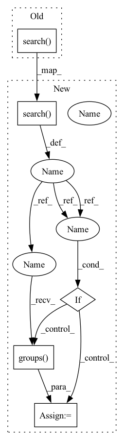

Pattern ID :34974

Before Change
positive_pairs.append("%s\t%s\t%s" % (person1, num1, num2))
if "negative_pairs" in item.attributes:
for pair in item.attributes["negative_pairs"]:
person2, num2 = LfwPath.PATTERN.search(pair).groups()
num2 = int(num2)
negative_pairs.append("%s\t%s\t%s\t%s" % \
(person1, num1, person2, num2))
After Change
positive_pairs.append("%s\t%s\t%s" % (person1, num1, num2))
if "negative_pairs" in item.attributes:
for pair in item.attributes["negative_pairs"]:
search = LfwPath.PATTERN.search(pair)
if search:
person2, num2 = search.groups()
num2 = int(num2)
else:
person2 = "-"
num2 = pair
In pattern: SUPERPATTERN
Frequency: 3
Non-data size: 5
Instances
Fragment ID: 100058348
Project Name: openvinotoolkit/datumaro
Commit Name: ef12d30458ba594e1a8114c0f5f103e00e04ec8d
Time: 2021-03-17
Author: anastasia.yasakova@intel.com
File Name: datumaro/plugins/lfw_format.py
M Class Name: LfwConverter
N Class Name: LfwConverter
M Method Name: apply(1)
N Method Name: apply(1)
M Parent Class: Converter
N Parent Class: Converter
M File Name: datumaro/plugins/lfw_format.py
N File Name: datumaro/plugins/lfw_format.py
M Start Line: 105
M End Line: 115
N Start Line: 110
N End Line: 140
'>
Before Change
self._save_image(item, osp.join(self._save_dir, subset_name,
LfwPath.IMAGES_DIR, item.id + LfwPath.IMAGE_EXT))
person1, num1 = LfwPath.PATTERN.search(item.id).groups()
num1 = int(num1)
if "positive_pairs" in item.attributes:
for pair in item.attributes["positive_pairs"]:
After Change
self._save_image(item, osp.join(self._save_dir, subset_name,
LfwPath.IMAGES_DIR, item.id + LfwPath.IMAGE_EXT))
search = LfwPath.PATTERN.search(item.id)
if search:
person1, num1 = search.groups()
num1 = int(num1)
else:
person1 = "-"
num1 = item.id
'>
Fragment ID: 100058347
Project Name: openvinotoolkit/datumaro
Commit Name: ef12d30458ba594e1a8114c0f5f103e00e04ec8d
Time: 2021-03-17
Author: anastasia.yasakova@intel.com
File Name: datumaro/plugins/lfw_format.py
M Class Name: LfwConverter
N Class Name: LfwConverter
M Method Name: apply(1)
N Method Name: apply(1)
M Parent Class: Converter
N Parent Class: Converter
M File Name: datumaro/plugins/lfw_format.py
N File Name: datumaro/plugins/lfw_format.py
M Start Line: 105
M End Line: 115
N Start Line: 110
N End Line: 140
'>
Before Change
item_id = osp.splitext(osp.basename(image_path))[0]
attributes = {}
pid, camid = map(int, Market1501Path.PATTERN.search(image_path).groups())
if pid == -1:
continue
After Change
item_id = osp.splitext(osp.basename(image_path))[0]
pid, camid = -1, -1
search = Market1501Path.PATTERN.search(image_path)
if search:
pid, camid = map(int, search.groups())
if 19 < len(item_id):
item_id = item_id[19:]
items[item_id] = DatasetItem(id=item_id, subset=self._subset,
'>
Fragment ID: 100058344
Project Name: openvinotoolkit/datumaro
Commit Name: 7e7adf6ea32f6e769d0cf1edebc6ea9e4db739fa
Time: 2021-02-26
Author: anastasia.yasakova@intel.com
File Name: datumaro/plugins/market1501_format.py
M Class Name: Market1501Extractor
N Class Name: Market1501Extractor
M Method Name: _load_items(2)
N Method Name: _load_items(2)
M Parent Class: SourceExtractor
N Parent Class: SourceExtractor
M File Name: datumaro/plugins/market1501_format.py
N File Name: datumaro/plugins/market1501_format.py
M Start Line: 39
M End Line: 58
N Start Line: 44
N End Line: 71
'>
Before Change
elif path != None and "/api/" in path:
start = "api/"
end = "index"
package = re.search("%s(.*)%s" % (start, end), path).group(1)
if package is None:
return "https://github.com/"+project+"/"+view+"/"+branch+"/docs/"+path
else:
After Change
elif path != None and "api/" in path:
start = "api/"
end = "/index"
str_result = re.search("%s(.*)%s" % (start, end), path)
if str_result:
package = str_result.groups()
return "https://github.com/"+project+"/"+view+"/"+branch+"/primeqa/"+package[0]+"/README.md"
else:
return original_url
else:
'>
Fragment ID: 100058345
Project Name: primeqa/primeqa
Commit Name: cd372fba0c36d9c2f6feaf55a5a0acfab98e010a
Time: 2022-08-23
Author: juanbrusco_23@hotmail.com
File Name: docs/_ext/edit_on_github.py
M Class Name: AnonimousClass
N Class Name: AnonimousClass
M Method Name: custom_api_url(4)
N Method Name: custom_api_url(4)
M Parent Class:
N Parent Class:
M File Name: docs/_ext/edit_on_github.py
N File Name: docs/_ext/edit_on_github.py
M Start Line: 23
M End Line: 29
N Start Line: 17
N End Line: 30